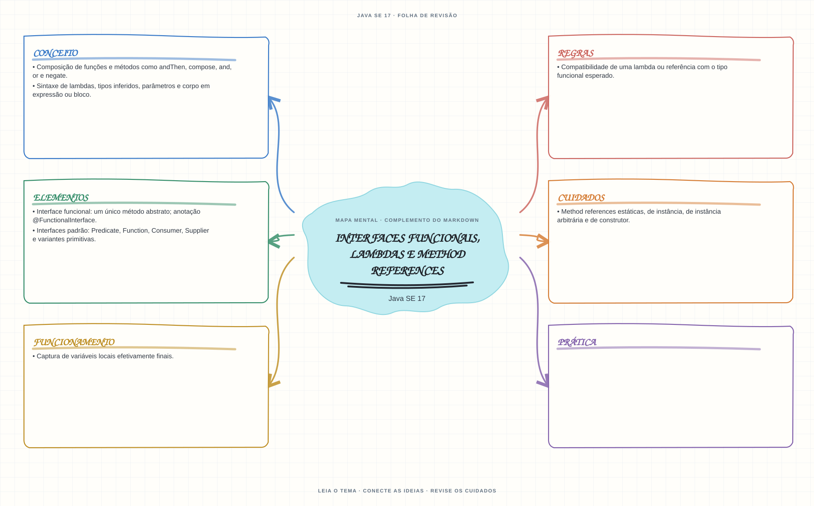

Ver mapa mental deste assuntoAssociar lambdas e method references ao tipo funcional esperado e aplicar composição de funções.
Primeiro contato: aprenda o conceito e pratique antes de consultar os detalhes de prova. Voltar aos fundamentos se algum termo ainda for novo.
- Leia o objetivo e localize a ideia principal no conteúdo abaixo.
- Preveja o resultado, compile e execute o exemplo.
- Faça a atividade sem copiar a solução e confira a checagem comentada.
EXEMPLO DE CONSOLE
Veja a regra em execução
Antes de executar, anote sua previsão. Compile o exemplo com o JDK e compare a saída observada com as regras deste assunto.
Comandos para compilar e executar
javac -d target/bin src/06-streams-e-lambdas/interfaces-funcionais-lambdas-e-referencias/InterfacesFuncionaisLambdasEReferenciasExample.java
java -cp target/bin InterfacesFuncionaisLambdasEReferenciasExampleA execução imprime o resultado no console para você comparar com sua previsão.
Consultar código-fonte: InterfacesFuncionaisLambdasEReferenciasExample.java
import java.util.List;
import java.util.function.Function;
import java.util.function.Predicate;
public class InterfacesFuncionaisLambdasEReferenciasExample {
public static void main(String[] args) {
System.out.println("=== Interfaces funcionais, lambda e method reference ===");
System.out.println("Predicate testa, Function transforma e Consumer consome cada valor.");
Predicate<String> comecaComJ = texto -> texto.startsWith("J");
Function<String, Integer> obterTamanho = String::length;
List<String> linguagens = List.of("Java", "Kotlin", "JavaScript");
linguagens.stream()
.filter(comecaComJ)
.forEach(linguagem -> System.out.println(
linguagem + " tem " + obterTamanho.apply(linguagem) + " caracteres."));
}
}
PRATIQUE AGORA
Faça uma pequena alteração por conta própria
Use um Predicate<String> para selecionar descrições maiores que cinco caracteres.
Concluído quando: o programa compilar, produzir o resultado esperado e você conseguir explicar a regra aplicada.
CHECAGEM RÁPIDA · Interfaces funcionais, lambdas e method references
Uma lambda pode modificar uma variável local capturada?
Conferir resposta comentada
Não pode reatribuí-la: uma variável local capturada deve ser final ou efetivamente final, embora isso não torne automaticamente imutável o objeto referenciado.
Estude
- Interface funcional: um único método abstrato; anotação
@FunctionalInterface. - Interfaces padrão:
Predicate,Function,Consumer,Suppliere variantes primitivas. - Sintaxe de lambdas, tipos inferidos, parâmetros e corpo em expressão ou bloco.
- Captura de variáveis locais efetivamente finais.
- Composição de funções e métodos como
andThen,compose,and,orenegate. - Method references estáticas, de instância, de instância arbitrária e de construtor.
- Compatibilidade de uma lambda ou referência com o tipo funcional esperado.
Prática
Converta lambdas em method references quando adequado e explique qual método é chamado e como os argumentos são associados.
Como este capítulo se relaciona com cada exame
Lambdas e streams surgem no Java 8; confirme se pertencem ao exame-alvo.
Base de estudo deste portal; confirme o mapeamento com o blueprint vigente.
Conceitos úteis; valide as APIs e o escopo atualizado de Java 21.
Orientação editorial sobre reaproveitamento do material; não representa objetivos oficiais nem garante cobertura do exame. Consulte o comparativo e as fontes da Oracle.